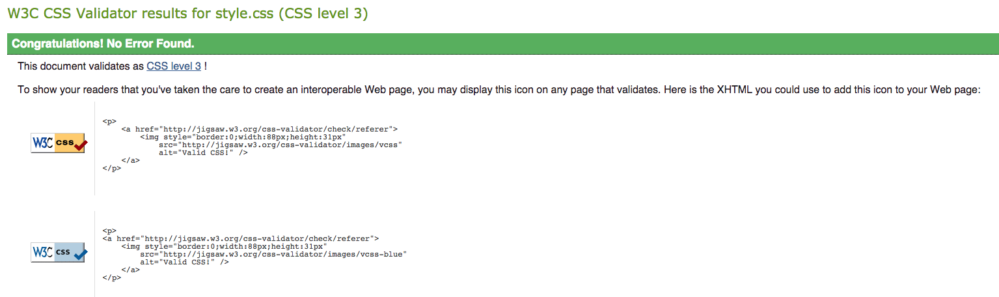

On day 2, we introduction to and covered CSS. We extended this learning log site to look nicer, using cascading style sheets (CSS).
Some of the things we covered:
- Creating an external stylesheet file to style our page
- Normalize.css - a downloadable stylesheet that makes browsers render all elements more consistently and in line with modern standards. It precisely targets only the styles that need normalising
- Validating your CSS - this actually proved useful as it warned that my font-family CSS should be surrounded in quotes if it contains whitespace - this was confusing because it DID have quotes - upon further inspection these were actually the Mac 'smart quotes' - which weren't recognised as normal. It flagged something useful to me that I had missed and required closer inspection. We used https://jigsaw.w3.org/css-validator/ for validation:

- An additional way to add CSS to the website - the @import statement. It allows specifying the media queries that the style is dependent on e.g. orientation:landscape will only load the specific CSS file if the screen orientation is landscape. This allows user agents to avoid retrieving resources for media types that are unsupported by the device
Terminology learned:
- CSS
- Cascading Style Sheets